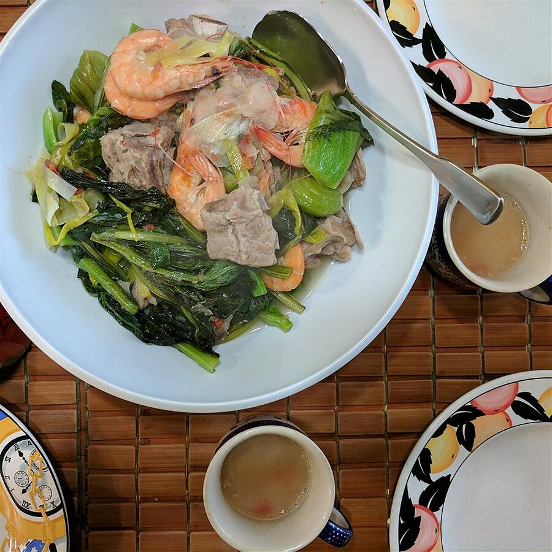

Sinigang

Description
Sinigang is one of my favorite Filipino dishes. It's an absolute comfort food with a
sour taste from lemon. Serve with rice.
Ingredients
- pounds pork neck bones
- 2 pounds pork spareribs
- water to cover
- 1 tablespoon salt
- 1 1/2 onions, quartered
- 2 tomatoes, quartered, or more to taste
- 1 taro, peeled and cut into large chunks
- 1/2 cup fresh lemon juice
- 2 tablespoons fish sauce
- 1 pound bok choy, chopped
- 1 large leek, chopped
- 5 head-on shrimp
Steps
-
Place pork neck bones and spareribs in a stockpot with water to cover. Add salt and
bring to a boil, skimming the fat off the surface of the broth. Reduce heat; add onions,
tomatoes, and taro. Boil until pork meat is very tender, 30 to 40 minutes.
-
Stir lemon juice and fish sauce into the broth. Continue boiling until flavors come
together, about 15 minutes. Add bok choy, leek, and shrimp. Cover, reduce heat,
simmer until shrimp are opaque and bok choy is tender, about 10 minutes more.